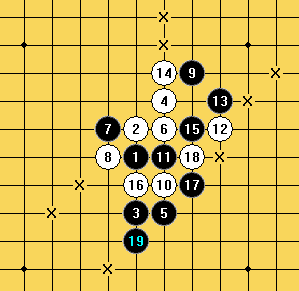

08全国赛决赛习题
首页
习题专区
#1 08全国赛决赛习题 作者：游戏人间 发表时间：2009-1-9 1:16:51
=======上图对应的爱五子棋谱代码如下，以便你拆解：========
h8h9h6i10i6i9g9g8j11i7i8k9k10i11
======================================================黑先如何VCT
［ 快乐天羽 于 2009-1-9 12:47:17 时奖励此帖[金币加 20 威望加1］
#2 Re:08全国赛决赛习题 作者：t周 发表时间：2009-1-9 7:29:08
=======上图对应的爱五子棋谱代码如下，以便你拆解：========
h8h9h6i10i6i9g9g8j11i7i8k9k10i11i12l9j9h7g7j8f8e9f6g6f7f5k7l8l11m12j10j12e7d6h4g5e5d4e4e6d7c7f3
======================================================
#3 Re:08全国赛决赛习题 作者：游戏人间 发表时间：2009-1-9 8:37:47
这个是VCT楼上的错了
#4 Re:08全国赛决赛习题 作者：Solmyr 发表时间：2009-1-9 9:13:28
诶~大鱼你那盘跟纳兰的对局好像还没发上来啊~我忘了你咋下的了~
#5 Re:08全国赛决赛习题 作者：行云流水 发表时间：2009-1-13 0:14:56


#6 Re:08全国赛决赛习题 作者：聂淼 发表时间：2009-1-18 18:16:47
意思是全国亚军漏了简单ＶＣＴ？
#7 Re:08全国赛决赛习题 作者：雅典娜 发表时间：2009-1-20 14:11:37
是错啦,做了几步棋呢,是VCT哦!
#8 Re:08全国赛决赛习题 作者：如果的事 发表时间：2009-2-1 18:33:10
吴嫡老师什么时候把答案公布一下